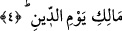

tabîatının hoşlanmadığı bir çok şeyde gizli bir takım sırlar ve hikmetler olabilir.
Rahmet olmasa ve rahmet-i ilâhiyye gazabı geçmemiş bulunsa, kâinatın varlığından
söz edilemezdi. Hakk’ın Mün’im (nimet veren) ismi de zâhir olmazdı. Rahmân büyük
nimetlerin O’na aid oluşunu gösterdiğinden kulun O’ndan az bir şey taleb etmesi sû-i
edeb olur. Ancak, Rahîm’in hemen Rahmân’dan sonra gelmesi, her türlü vehim ve
şüpheyi ortadan kaldırmak ve küçük şeyleri de Cenâb-ı Hak’dan isteyebilme cür’etini
sağlamak içindir.
Sûfîlerden birine: “Sana küçük bir ihtiyacımı görmen için geldim” denilince o: “Sen o
küçük ihtiyacın için küçük bir adam ara.” cevâbını vermiştir. Allah Teâlâ da bu
âyetlerde bir bakıma şöyle buyurmaktadır: “Ben sadece Rahmân ismiyle yetinecek
olursam, kendimden hayâ ederim. Çünkü Ben, hem Rahmân hem Rahîm’im. İste Benden
ayakkabının bağına, tencerenin tuzuna varıncaya kadar her şeyi.” Nitekim Şeyh Sa’dî
(k.s) der ki:
Eğer başını bu kapıya koyarsan,
Elinin boş dönmesi imkânsızdır.
Ehl-i hakîkat der ki: “Rahmân’a aid üç makam vardır. Onlar da: “Zâhir” isminin
makamı olan Zuhûr, “Bâtın” isminin makamı olan butûn ve ikisini birleştiren cem’
makamıdır. Her varlık bu mertebelerden birinde bulunur. Onun hükmünün dışına
çıkamaz. Bu derece ve makamlara göre Rahmet-i ilâhiyye’nin hükümleri şöyle tasnîf
edilebilir: Saîdler (bahtiyarlar), bedbahtlar; ruhlarıyla nimete erenler, bedenleriyle
nimete erenler ve bu iki mertebe arasını birleştirenler diye taksim edilir. Meselâ
saidlerden ehl-i cennet olanlardan bazıları sûretleriyle değil, rûhlarındaki ma’rifet
sebebiyle bu noktaya gelirler. Kendilerinin cennette nimete ermelerini sağlayacak
yeterli amelleri yoktur. Varsa da diğerlerine göre yeterli değildir. Bunun tersi, zühd ve
ibâdetle meşgul olan bâzı kimseler vardır ki, bunların da, ilim ve ma’rifetten nasibi
yoktur. Çünkü böylelerinin rûhlarının ilm-i ilâhî makamıyla münâsebetleri olmadığı için
rûhânî nimetlerden nasibleri yoktur. Bu yüzden amel sırasındaki düşünceleri, amel
sonrasına taalluk etmez. Aksine onlar ameli gâye sanırlar. Ve amelin önünde durup, va’d
edilen mükâfâta veya tehdîde takılıp kalırlar. Amelin sağlayacağı asıl faydayı
kavrayamazlar. Bu anlattığımız ilim ve amel makamlarının arasını cem’edenler ise ilim
ve amelden tam bir nasîb alarak, kurtuluşa eren bahtiyarlardır. Onlar da peygamberler
ve vâris-i nebî olan kâmil velîlerdir. Mevlânâ Celâleddîn (k.s.) der ki:
Her güvercin bir yol ve üslûb üzre uçar;
Ancak bu güvercin tarafsızlık tarafına uçar.